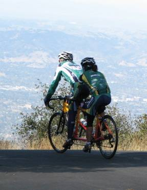

Week 4 Results: Mt. Diablo
20 Oct 2007
|
2007 Low-Key Hillclimbs Week 4 Results: Mt. Diablo 20 Oct 2007 |
|  |
| Bob and Ileana approach the Diablo summit (photo by Ron Brunner) |
The previous day's rains blew eastward, leaving cool temperatures and crystal-clear skies for week 4 of the 2007 Low-Key Hillclimb series, Mount Diablo. This year's climb shared the finish of last year's assault on Diablo, but while 2006 reached the summit road by the longer North Gate Road, this year, we tackeled South Gate, still a formidable challenge. Week 1 winner Chris Phipps was spotted climbing with his Z-teammates, perhaps saving his resources for Pen Velo's San Bruno Hillclimb on the New Year.
Yet again in this year's series, Tim Clark of Red Dragon set a furious pace from the start, holding off a determined and steady chase by second-place Clark Foy by only 20 seconds. Carl A. Nielson finished an impressive third.
In the women's competition, it was a battle of former winners, with Anny Henry of CRC and Janet Martinez of Friends of Janet arriving together to the brutal, final slopes of Diablo's Summit Road. In as much of a "sprint" as the 17% grade allows, Anny prevailed, with Janet finishing an exceptional second. Lucia Mokres of LGBRC finished a fantastic third.
Establishing his weekly benchmark for hybrid-electric bikes, Bill Bushnell once again set the quickest time of all for the climb, 43:44.
In the all-important team competition, Bike Trip led the way this week, with LGBRC in second and San Jose Bike Club producing the third best score.
Thanks to coordinator Patrick Gordis, with help from Robert Ballard, Ron Brunner, Emily Gordis, Steve Hill, and Adam Tow for making today's climb possible!median time = 43:44
pl # rider team category time mph fph score 1 244 Bill Bushnell TNT Hybrid 43:44 15.48 4418 100.00
median time = 64:55
pl # rider team category time mph fph score 1 210 Tim Clark Red Dragon 35+ 50:51 13.31 3799 127.66 2 39 Clark Foy San Jose Bike Club 40+ 51:11 13.22 3775 126.83 3 141 Carl A. Nielson Pegasus 45+ 52:17 12.94 3695 124.16 4 328 Mark Edwards Bike Trip 45+ 53:31 12.65 3610 121.30 5 54 Justin Lucke Google Vegan 54:14 12.48 3562 119.70 6 352 Geoff Drake Bike Trip 45+ 54:47 12.35 3527 118.50 7 17 Brian Edwards Hell Riders 25-29 55:07 12.28 3505 117.78 8 97 Greg McQuaid Western Wheelers 35+ 55:15 12.25 3497 117.50 9 45 Rupert Brauch Webcor/Alto Velo 3 55:33 12.18 3478 116.86 10 309 Dan Hicklin LGBRC 4 57:06 11.85 3384 113.69 11 213 Tom Gardin 35+ 57:10 11.84 3380 113.56 12 124 Jeff Farnsworth San Jose Bike Club 50+ 57:59 11.67 3332 111.96 13 165 Allen Wulczynski San Jose Bike Club 45+ 58:19 11.61 3313 111.32 14 116 Shance Ordell Western Wheelers 35+ 58:29 11.57 3304 111.00 15 277 DJ Novotney 30+ 58:42 11.53 3291 110.59 16 142 Rich Hill LGBRC 40+ 59:14 11.43 3262 109.59 17 4 Fred E. Stamm Pen Velo/Kondra 55+ 59:40 11.34 3238 108.80 18 323 Scott Martin Bike Trip 50+ 59:59 11.28 3221 108.22 19 264 Luke Burton LGBRC 5 60:45 11.14 3180 106.86 20 67 Martin Hyland Western Wheelers 50+ 61:07 11.07 3161 106.22 21 318 Jeff Botelho TFSF 45+ 61:10 11.06 3159 106.13 22 317 Chad Roemer Genentech 35+ 61:17 11.04 3153 105.93 23 100 Oswaldo Orozco San Jose Bike Club Fat-And-Heavy 40+ 61:59 10.92 3117 104.73 24 238 Michael Kim 45+ 62:15 10.87 3104 104.28 25 265 Steven Woo LGBRC 4 62:56 10.75 3070 103.15 26 307 Christian Paquet Doogie 50+ 63:19 10.69 3051 102.53 27 348 Carl Butler Friends of Janet 50+ 63:40 10.63 3035 101.96 28 1 Dan Connelly TNT 3 63:44 10.62 3031 101.86 29 29 Dean Larson Team Dino 40+ 63:46 10.61 3030 101.80 29 301 Michael Wright SRI 50+ 63:46 10.61 3030 101.80 31 344 Harvey Wong Friends of Janet 35+ 64:09 10.55 3012 101.20 32 233 Rand Hill Apple 35+ 64:55 10.43 2976 100.00 33 325 Kevin Fetterman Sunburnt DJ 40+ 65:06 10.40 2968 99.72 34 331 Rob Boyer LGBRC 50+ 65:17 10.37 2959 99.44 35 236 Paul Melville Doogie 55+ 66:14 10.22 2917 98.01 36 280 Patrick Kenny Google 66:31 10.17 2905 97.59 37 273 Calvin Do Skinny slow guys 35+ 66:34 10.17 2902 97.52 38 229 Michael Czepiel Apple 20-24 66:49 10.13 2891 97.16 39 232 Matt Rodnick Recreational 67:38 10.01 2857 95.98 40 99 Roberto St. Domingo San Jose Bike Club 50+ 68:09 9.93 2835 95.26 40 212 Pete Jollymour 6 68:09 9.93 2835 95.26 42 34 Stephen Fong Blubber Busters 5 68:32 9.88 2819 94.72 43 276 Genti Cuni Climbing Turtles 69:56 9.68 2763 92.83 44 64 Keith Devlin Western Wheelers 60+ 70:02 9.66 2759 92.69 45 201 Vinay Ravuri Georgia Tech Beginner 70:10 9.65 2753 92.52 46 341 Tim Grie Olympic Club 50+ 70:22 9.62 2746 92.25 47 149 Steve Sprang Apple 30+ 70:48 9.56 2729 91.69 48 337 Bruce Swanson Leafy Joe 45+ 71:39 9.45 2696 90.60 49 110 Edward Miller SLACer 65+ 72:20 9.36 2671 89.75 50 77 Jorge Chang Blubber Busters Infinity 72:52 9.29 2651 89.09 51 70 Bob Parker AV: Old Guys Finish 50+ 74:09 9.13 2606 87.55T 52 326 Jim Heiser Apple 35+ 74:10 9.13 2605 87.53 53 333 Cris Maltzman 45+ 76:34 8.84 2523 84.78 54 336 Ed Noskowski Leafy Joe 45+ 78:24 8.63 2464 82.80 55 300 Wade Bastien 35+ 78:37 8.61 2457 82.57 56 94 Todd Benjamin Apple 40+ 78:53 8.58 2449 82.29 57 89 JT Conklin Identity Engines 35+ 81:48 8.27 2362 79.36 58 340 Jon Boas TFSF 65+ 81:52 8.27 2360 79.30 59 254 Richard Allen Webcor/Alto Velo 55+ 85:46 7.89 2253 75.69 60 231 Murali Krishnan Commuter 35+ 86:21 7.84 2237 75.18 61 298 Keith Petty 35+ 94:34 7.16 2043 68.65 62 302 Steve Raymond 45+ 136:15 4.97 1418 47.65 62 293 Steve Romak 45+ 136:15 4.97 1418 47.65 62 310 Mark Raymond 60+ 136:15 4.97 1418 47.65 T : tandem score
median time = 84:55
pl # rider team category time mph fph score 1 154 Anny Henry CRC 3 65:00 10.41 2972 130.64 2 240 Janet Martinez Friends of Janet 40+ 65:08 10.39 2966 130.37 3 270 Lucia Mokres LGBRC 4 65:30 10.33 2950 129.64 4 332 Margie Biddick Bike Trip 4 71:31 9.46 2701 118.74 5 260 Mary Ellen Allen Webcor/Alto Velo 55+ 77:08 8.77 2505 110.09 6 95 Kelly Kasik Apple 84:36 8.00 2284 100.37 7 275 Leah Edwards 25-29 85:14 7.94 2267 99.63 8 279 Nuria Bertran Climbing Turtles Beginner 89:36 7.55 2156 94.77 9 71 Marie Borselle Velogirls 40+ 91:30 7.40 2111 92.81 10 111 Pat Parseghian Google 50+ 94:19 7.18 2048 90.03 11 324 Ileana Parker Webcor/Alto Velo Tandem 74:09 9.13 2606 87.55T 12 246 Amy Tam Velogirls 102:36 6.60 1883 82.76 13 27 Christine Holmes Librarian 40+ 107:06 6.32 1804 79.29 T : tandem score
pl team score scoring 1 Bike Trip 358.54 (Mark Edwards, Margie Biddick, Geoff Drake) 2 LGBRC 352.93 (Lucia Mokres, Dan Hicklin, Rich Hill) 3 San Jose Bike Club 350.11 (Clark Foy, Jeff Farnsworth, Allen Wulczynski) 4 Western Wheelers 334.71 (Greg McQuaid, Shance Ordell, Martin Hyland) 5 Friends of Janet 333.53 (Janet Martinez, Carl Butler, Harvey Wong) 6 Webcor/Alto Velo 314.50 (Rupert Brauch, Mary Ellen Allen, Ileana Parker) 7 Google 307.33 (Justin Lucke, Patrick Kenny, Pat Parseghian) 8 Apple 297.53 (Kelly Kasik, Rand Hill, Michael Czepiel) 9 TNT 201.86 (Dan Connelly, Bill Bushnell) 10 Doogie 200.54 (Christian Paquet, Paul Melville) 11 Climbing Turtles 187.60 (Nuria Bertran, Genti Cuni) 12 TFSF 185.43 (Jeff Botelho, Jon Boas) 13 Blubber Busters 183.81 (Stephen Fong, Jorge Chang) 14 Velogirls 175.57 (Marie Borselle, Amy Tam) 15 Leafy Joe 173.40 (Bruce Swanson, Ed Noskowski) 16 CRC 130.64 (Anny Henry) 17 Red Dragon 127.66 (Tim Clark) 18 Pegasus 124.16 (Carl A. Nielson) 19 Hell Riders 117.78 (Brian Edwards) 20 Pen Velo/Kondra 108.80 (Fred E. Stamm) 21 Genentech 105.93 (Chad Roemer) 22 SRI 101.80 (Michael Wright) 22 Team Dino 101.80 (Dean Larson) 24 Sunburnt DJ 99.72 (Kevin Fetterman) 25 Skinny slow guys 97.52 (Calvin Do) 26 Georgia Tech 92.52 (Vinay Ravuri) 27 Olympic Club 92.25 (Tim Grie) 28 SLACer 89.75 (Edward Miller) 29 AV: Old Guys Finish 87.55 (Bob Parker) 30 Identity Engines 79.36 (JT Conklin) 31 Librarian 79.29 (Christine Holmes) 32 Commuter 75.18 (Murali Krishnan)